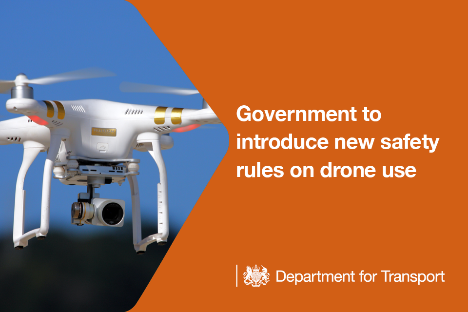

David Foley
David Foley
08/10/17
Registration?
There is much talk about registration at the moment. This proposal has encountered a mixed reception with drone fliers: commercial users are already subject to a strict regime with the requirement for a PfCO from the CAA. Recreational users are currently neither have to register nor to pass any awareness/competency test. Many like it that way. I'm a fan of registration. It won't solve the problem of renegade drone users, but it will help provide some security about the deployment and use of drones. Like many, I have good ideas about how I would like a registration system to work.
Some people see registration as either an infringement of their freedoms or an example of an overbearing state. I don't see it as either. Flying a drone has the potential to be either dangerous or intrusive, if not carried out properly. The things you need to do to make your flight as safe as can reasonably be expected are not onerous. They do require more though, than simply getting the drone out of the box, charging the battery and having a go. Registration is a reasonable response from a society that wants people to enjoy drones responsibly.
Some people wonder if registration will have any effect on improving safety. Surely, human nature is such that those who would fly safely anyway will dutifully register their drones and those who would show little concern for others will carry on doing so and won't register. I think it's true that there will be some people who won't register and that they may well be the people who are flying with poor airmanship. It strikes me that the majority of people would register, if it was required, and that this will help them understand their responsibilities and adhere to them. It also seems like it would make it easier for retailers if they knew there was one place to direct people.
Whilst I think that drone registration is a good idea, there are currently very fe details about how it will operate. Here are a few suggestions of mine:
- Make the cost proportionate - don't make registration seem disportionately expensive compared to the cost of the hobby (taking into account the cost of the drone and subsequent equipment). Presumably the scheme will have to cover its costs - so don't make it an expensive delivery model. Registration by app downloaded to the owner's smartphone and enabled using the barcode on the manufacturer's packaging sounds like a low cost way to go. Making it disproportionately expensive would surely discourage those you would most want to take part in the scheme.
- Strong penalties - for people flying unregistered drones there should be a pretty severe penalty. Drone confiscation and destruction seems like a good place to start.
- Provide a quick and responsive service - make registration quick and easy. If people have to post something off and wait weeks to get a reply, uptake will be low.

You can find out more about the Government's proposal here